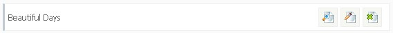

Colour Schemes
Creating colour schemes is a very easy process. This page details a few of the options and features when adding schemes. Please read carefully. Thank you!
Pre-Configured Colour Schemes
The system automatically comes with some pre-configured colour schemes. These can be edited if you require or removed.
Creating a New Colour Scheme
Firstly, click on 'Colour Schemes' in the admin area and select the link in right hand menu 'Create New Scheme'. You`ll be presented with a list of form options.
Set a name for your new scheme, a page width (in pixels) and also specify a background colour, a font style and a font size, then click 'Create New Scheme'.
Use the link to view a colour palette. Or enter your own 6 digit hexidecimal code. The FAQ page details how to use other fonts, but
we recommend using only the ones in the system as these are the ones more commonly used. If a visitor doesn`t have the font installed that you use, they won`t see the text
how you see it. Their system will default to the next available font.
Edit/Preview/Delete Colour Schemes
You can easily manage your colour schemes by selecting 'Colour Schemes' from the admin menu. For each scheme you`ll see something like this:

The buttons are as follows:
Preview Scheme
Edit Scheme
Delete Scheme
Help/Support
As this software is a little out of date and so that I can focus on new software, Maian Survey is no longer supported. Sorry.